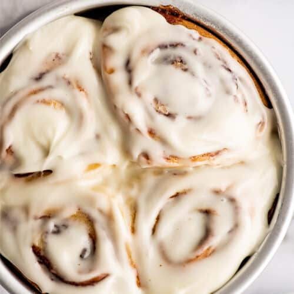

Cinnamon Rolls Recipe

Description
A cinnamon roll is a sweet roll commonly served in Northern Europe and North America.
In Sweden it is called kanelbulle, in Denmark it is known as kanelsnegl, in Norway it is known as kanelbolle,
skillingsboller or kanelsnurr, in Finland it is known as korvapuusti, and in Estonia it is known as kaneelirull.
I didn't actually write this paragraph lol, i just copied and pasted it from a recipes website.
Ingredients
- 1 (1 pound) loaf frozen bread dough, thawed
- 3 tablespoons butter, melted
- ⅔ cup brown sugar
- ½ cup chopped walnuts
- 1 teaspoon ground cinnamon
- 1 teaspoon water, or as needed
- ⅓ cup heavy whipping cream
- ⅔ cup sifted confectioners' sugar
- 2 tablespoons milk
- 1 dash vanilla extract
Steps
- Lightly grease 2 round cake pans with butter.
- Roll bread dough out to an 6x18-inch rectangle. Brush with melted butter. Combine brown sugar, walnuts, and cinnamon in a small bowl; sprinkle over butter. Roll dough into a log, starting at the long edge. Moisten edge with water and seal. Cut log into 20 slices; arrange rolls, cut sides down, in prepared cake pans. Cover with a towel and let rise in a warm place until doubled in volume, about 90 minutes.
- Preheat oven to 350 degrees F (175 degrees C). Pour heavy cream over dough.
- Bake in preheated oven until golden brown, about 25 minutes.
- Mix confectioners' sugar, milk, and vanilla extract in a small bowl; drizzle over warm cinnamon rolls to serve.